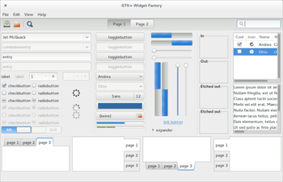
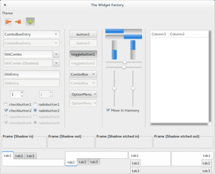

Design wechseln
Dieser Artikel wurde für die folgenden Ubuntu-Versionen getestet:
Ubuntu 14.04 Trusty Tahr
Zum Verständnis dieses Artikels sind folgende Seiten hilfreich:
Es gibt viele Programme, die GTK+ zur Fensterdarstellung nutzen. Dazu zählen z.B. alle der in Ubuntu, Ubuntu GNOME, Ubuntu MATE, Lubuntu und Xubuntu verwendeten Programme. Dieser Artikel zeigt, wie man ein neues Thema installiert und wie man ein Thema wechselt.
Installation¶
Thema suchen¶
In den Ubuntu-Paketquellen findet man nur eine geringe Anzahl an Themen. Im Internet findet man zum Beispiel auf gnome-look.org  eine deutlich größere Auswahl an Themen.
eine deutlich größere Auswahl an Themen.
Bei der Suche ist darauf zu achten, aus welchen Bestandteilen das gewünschte Thema bestehen muss. Die meisten Programme nutzen inzwischen GTK+ in Version 3.x. Es gibt aber noch einige Programme, die die Version 2.x nutzen. In diesem Fall reicht es nicht, nur das passende GTK+-2.x-Thema zu installieren, sondern man benötigt das gewünschte Thema sowohl für Version 2.x als auch für 3.x. Aus diesem Grund sollte man sich die Beschreibung und die README-Datei des Themas vor der Installation genau durchlesen. Mehr zu der Problematik findet man im Artikel GTK+.
Achtung!
Das gewählte Thema muss unbedingt die verwendete Version von GTK+ unterstützen, da es sonst zu Fehlern in der Fensterdarstellung kommt.
Thema installieren¶
Nachdem man sich für ein kompatibles Thema entschieden hat, folgt man der Installationsanleitung in der Beschreibung oder der README-Datei. Normalerweise muss man das betreffende Designpaket für einzelne Benutzer nach ~/.themes/ oder mit Root-Rechten[1] nach /usr/share/themes/ für systemweite Zugriffe entpacken [2][3]. Wichtig ist dabei noch, das die Ordnerstruktur innerhalb des Themas erhalten bleibt. Beispiel: ~/.themes/MEIN_THEMA/ enthält dann neben einer Datei index.theme noch mehrere Unterordner.
Falls man ein Design-Paket systemweit installiert hat, muss es im Terminal[4] mit dem Befehl
sudo chmod -R 755 /usr/share/themes/[NAME DES THEMAS]
noch für alle Benutzer verfügbar gemacht werden.
Thema wechseln¶
Das eigentliche Wechseln eines Themas unterscheidet sich je nach verwendeter Oberfläche.

Unity¶
In den Systemeinstellungen kann man im Reiter "Darstellung" unter dem Punkt "Thema" zwischen den verfügbaren Themen wechseln. Hierbei kann man aber die Fensterdekoration und das GTK+-Thema nur gemeinsam einstellen.

GNOME Shell¶
Falls man die GNOME Shell verwendet, dann kann man mit Hilfe des Optimierungswerkzeug im Reiter "Erscheinungsbild" unter "Fenster" die Fensterdekoration und unter "GTK+" das GTK+-2.x- und GTK+-3.x-Thema gemeinsam wechseln. Es ist nicht möglich, das GTK+-2.x-und GTK+-3.x-Thema getrennt einzurichten.
Das Anpassen des GNOME-Shell-Themas wird im Artikel GNOME Shell/Themes erleutert.
dconf/gsettings¶
Alternativ kann man das Thema auch mit Hilfe des dconf-Editors ändern[5]:
GTK+ Thema: Dazu ändert man im Schema "org → gnome → desktop → interface" den Schlüssel "gtk-theme" in den Ordnernamen des installierten Themas.
Fensterdekoration: Dazu ändert man im Schema "org → gnome → desktop → wm → preferences" den Schlüssel "theme" in den Ordnernamen des installierten Themas.
In beiden Fällen ist auf die richtige Schreibweise des Ordnernamens zu achten!
Kommandozeile¶
Möchte man das verwendete Thema mit Hilfe der Kommandozeile wechseln, dann kann man dafür den Befehl gsettings verwenden, welcher über die Konsole auf das GNOME Konfigurationssystem dconf zuzugreifen. "NAME-DES-THEMAS" muss durch den genauen Ordnernamen des installierten Themas ersetzt werden.
GTK+ Thema:
gsettings set org.gnome.desktop.interface gtk-theme 'NAME-DES-THEMAS'
Fensterdekoration:
gsettings set org.gnome.desktop.wm.preferences theme 'NAME-DES-THEMAS'

Xfce¶
Unter Xfce kann man das neue Design im Einstellungsmanager in den Abschnitten "Fensterverwaltung" (nur Fensterdekoration) und "Erscheinungsbild" (nur Fensterinhalt) auswählen.
Hinweis:
Ab Xfce 4.10 bzw. Ubuntu 12.10 können Themen-Archive per Drag&Drop über den Einstellungsmanager installiert werden. Diese werden automatisch nach ~/.themes/ entpackt.
Weitere Einstellmöglichkeiten findet man im Artikel Xfce Themes.

LXDE¶
lxappearance ist der Standard-Designwechsler von LXDE und ermöglicht die Anpassung des GTK+2-Designs, z.B. das Aussehen der Fensterrahmen und die verwendeten Symbole (Icons) sowie Mauszeiger. Man erreicht dies über "Einstellungen → Erscheinungsbild". Mehr Informationen findet man im Artikel LXDE Einstellungen.

GTK+ 2.x Thema wechseln¶
Leider ist es unter Ubuntu und Ubuntu GNOME nicht möglich, das GTK+-2.x-Thema getrennt vom GTK+-3.x-Thema zu wechseln. Möchte man es dennoch trennen, dann bietet es sich an, das GTK+-2.x-Design mittels LXAppearance zu wechseln, da dieses nur sehr wenige Abhängigkeiten hat und man damit unter anderem auch die verwendeten Symbole (Icons) oder die Schriftart wechseln kann. LXAppearance kann über das folgende Paket installiert werden[5]:
lxappearance
 mit apturl
mit apturl
Paketliste zum Kopieren:
sudo apt-get install lxappearance
sudo aptitude install lxappearance
Gestartet wird das Programm dann mit dem Befehl [3]:
lxappearance
Alternativ kann man auch per Hand das Thema festlegen. Man öffnet dazu mit einem Editor [6] die Datei ~/.gtkrc-2.0 bzw. erstellt sie, wenn sie noch nicht existiert, und fügt die folgende Zeile ein:
include "~/.themes/NAME_DES_THEMES/gtk-2.0/gtkrc"
Wichtig ist, dass die include-Zeile immer auf die gtkrc-Datei des gewünschten GTK-Desgins verweist. Nach einem Neustart des Fenstermanager wird das Design aktiviert. Die Designs aus den Quellen liegen meist unter /usr/share/themes.
Programme, welche mit Root-Rechten laufen, lesen die gtkrc-2.0 aus dem /root/-Ordner, deswegen sollte eine Kopie bzw. Verweis auch im Ordner /root/ sein. Benötigt wird das z.B. bei Synaptic, da man nur mit Root-Rechten Programme installieren kann.
GTK+ 3.x Thema wechseln¶
Möchte man ohne die Hilfe eines Themen-Managers das GTK+-3.x-Thema wechseln, dann kann man manuell die Datei ~/.config/gtk-3.0/settings.ini mithilfe eines Texteditors [7] bearbeiten. Die Datei kann folgendermaßen aufgebaut sein:
1 2 3 4 5 6 | [Settings] gtk-application-prefer-dark-theme = false gtk-theme-name = [NAME DES DESIGN] gtk-fallback-icon-theme = gnome gtk-icon-theme-name = [NAME DES ICON THEMA] gtk-font-name = [NAME DER SCHRIFTART] [GROESSE DER SCHRIFT] |
Thema vergleichen¶
Auf den verschiedenen Webseiten mit Designs für GNOME und Xfce findet man unzählige Designs. Oftmals ist es schwer, diese Designs zu vergleichen. Um ein Design "objektiv" mit dem anderen zu vergleichen, so kann man das Programm
gtk3-widget-factory für GTK+ 3.x Designs und The Widget Factory für GTK+ 2.x Designs benutzen.
gtk3-widget-factory¶
 gtk3-widget-factory lässt sich direkt aus den offiziellen Paketquellen installieren:
gtk-3-examples (universe)
mit apturl
Paketliste zum Kopieren:
sudo apt-get install gtk-3-examples
sudo aptitude install gtk-3-examples
Für das Programm wird kein Starteintrag angelegt. Es lässt sich über den Befehl
gtk3-widget-factory
starten. Daraufhin wird das aktuelle GTK+-3.x-Thema angezeigt. Ein Wechsel zwischen den installierten Themen innerhalb des Programms ist leider nicht möglich.
thewidgetfactory¶
 The Widget Factory lässt sich direkt aus den offiziellen Paketquellen installieren:
thewidgetfactory (universe)
mit apturl
Paketliste zum Kopieren:
sudo apt-get install thewidgetfactory
sudo aptitude install thewidgetfactory
Für das Programm wird kein Starteintrag angelegt. Es lässt sich über den Befehl
twf
starten. Unter dem Menüpunkt "Theme" werden alle installierten GTK+-2.x-Themen angezeigt, und man kann bequem zwischen diesen hin und her wechseln.
Deinstallation¶
Um ein Thema wieder zu löschen, entfernt man das Designpaket einfach wieder aus dem Ordner, an dem man es installiert hat.
Links¶
gnome-look.org
- für Ubuntu GNOME (GTK+ 3.x) und Ubuntu MATE (GTK+ 2.x)xfce-look.org
- für Xubuntu (getrennte Themen für Fensterränder und Fensterinhalt)box-look.org
- für Lubuntu bzw. Openbox u.a. (getrennte Themen für Fensterränder und Fensterinhalt)PPA
mit zahlreichen, einfach zu installierenden Designs (Vorschaubilder müssen über eine Internetsuche recherchiert werden)GTK+
 Übersichtsartikel
Übersichtsartikel
- Erstellt mit Inyoka
-
 2004 – 2017 ubuntuusers.de • Einige Rechte vorbehalten
2004 – 2017 ubuntuusers.de • Einige Rechte vorbehalten
Lizenz • Kontakt • Datenschutz • Impressum • Serverstatus -
Serverhousing gespendet von